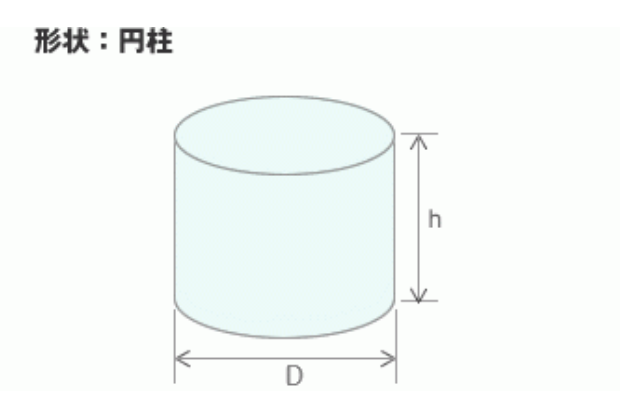

円柱
ホーム
円柱の計算
円筒の計算
角柱の計算
無限角柱の計算
額縁パッキンの計算
入力フォーム
直径(D)
mm
高さ(h)
mm
静的せん断弾性率(Gs)
MPa
※下記「静的せん断弾性率表」を参照・・・
荷重(W)
kgf
荷重
N
1kgf ≒ 10N となります.
（例：100kgf → 1,000N）
[形状率(s) (D)/4(h)]
(D)
4(h)
形状率
[みわけの弾性率(MPa)(Eap) (Gs)*(3+4.935(s
2
))]
(Gs)
(3+4.935(s
2
))
みわけの弾性率(MPa)(Eap)
[受圧面積(mm
2
)(AL) π(3.14)(D
2
)/4]
π(3.14)(D
2
)/4
受圧面積(mm
2
)(AL)
[自由面積(mm^2)(AF) π(3.14)*(D)*(h)]
π(D)
(h)
自由面積(mm
2
2)(AF)
[バネ定数(N/mm) (K) (Emp)*(AL)/(h)]
(Emp)
(AL)
(h)
バネ定数(N/mm)(K)
[たわみ量(mm) (x) (W)/(K)]
(W)
(K)
たわみ量(mm)